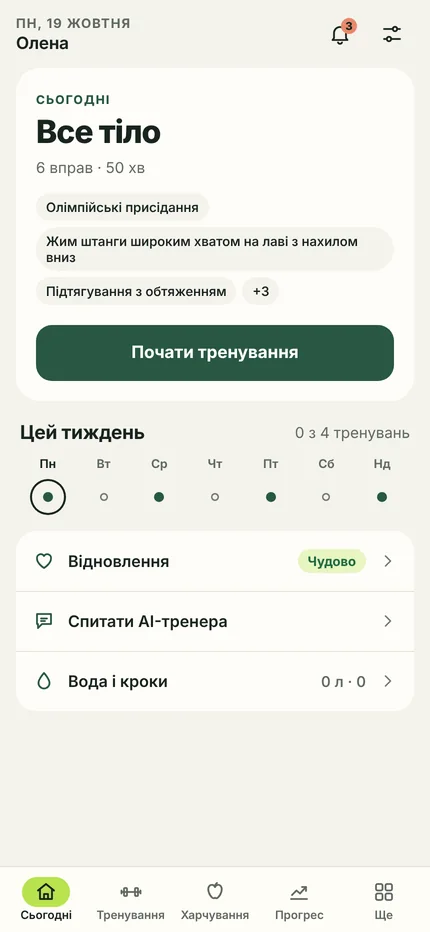
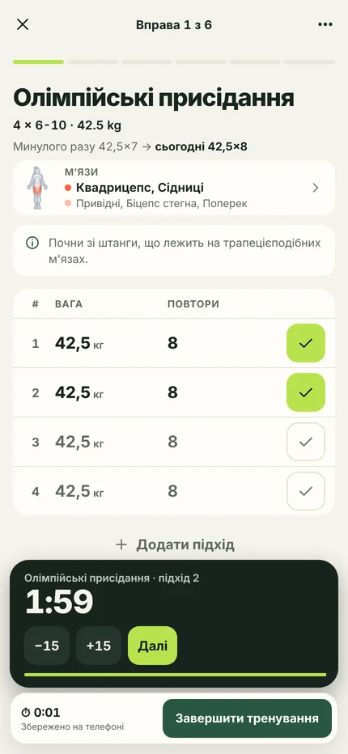
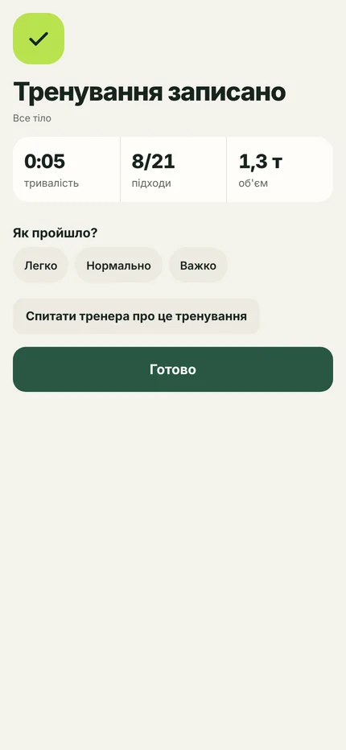
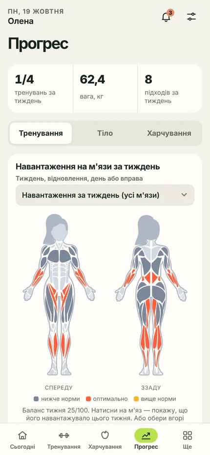
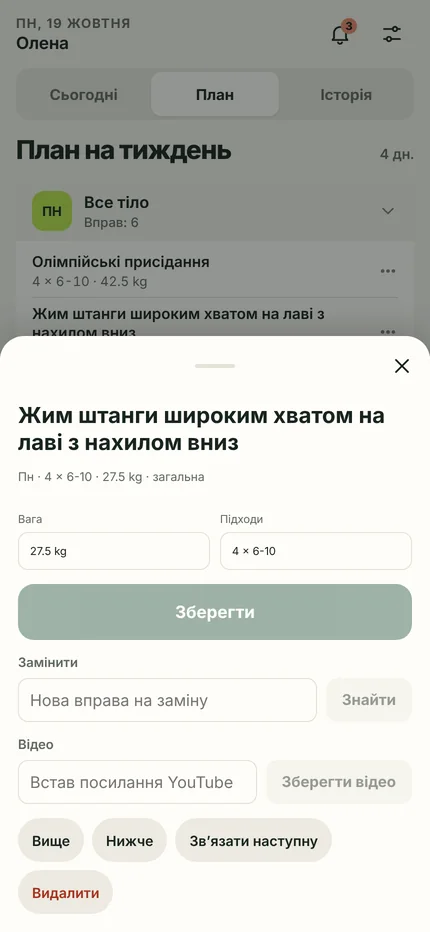
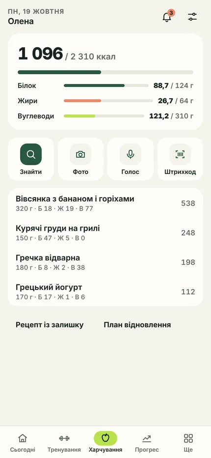
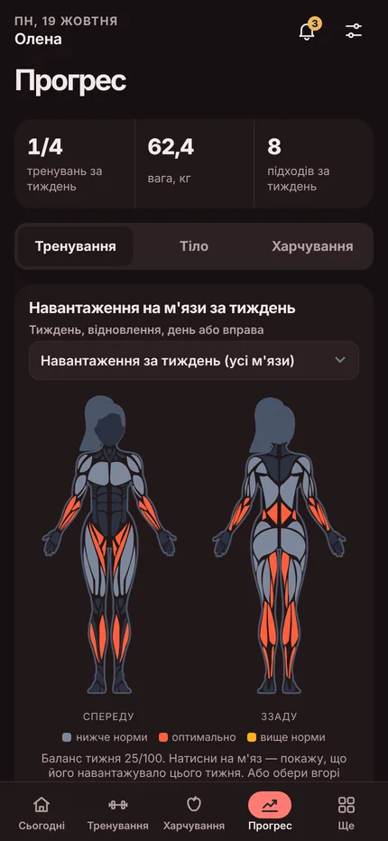

- Безкоштовно
- Нічого не встановлювати
Тренер, який живе там, де ти вже сидиш
Складає програму під твої дні, обладнання і травми. Веде щоденник тренувань, рахує КБЖУ за фото їжі та нагадує сам. Усе всередині Telegram — нічого не треба встановлювати.
- Без реклами
- Без підписки
- Відкритий код
Чим відрізняється
Це не щоденник тренувань. Це тренер.
Щоденник чекає, поки ти принесеш йому програму і сам її відкриєш. Тут навпаки.
Програму складає він
Питає про ціль, рівень, дні, обладнання і травми — і будує спліт із підходами, вагами та технікою. Не треба знати, з чого почати.
Сам вирішує, коли додати вагу
Подвійна прогресія, врахування RPE, виявлення плато й заміна вправ при болю. Ти просто пишеш, що зробив.
Приходить першим
Окремий застосунок чекає, поки його відкриють. Бот з'являється в списку чатів у день тренування — нагадує про підхід, відпочинок і вечірній підсумок. Саме тому про нього не забувають.
Екран для самого тренування
Міні-застосунок відкривається прямо в Telegram — встановлювати нічого не треба. Режим фокусу: одна вправа на екрані, підхід одним дотиком, таймер відпочинку з кнопками ±15 с під пальцем, графіки і календар. Незбережене тренування зберігається саме — закрив застосунок чи взяв інший телефон, продовжуєш з того ж місця. Натиснув «Завершити» — підсумок: скільки тривало тренування, скільки відпочивав і які рекорди побив.
Звичайний трекер
- Встанови застосунок, заведи акаунт
- Принеси власну програму
- Сам вирішуй, коли додавати вагу
- Харчування — окремий застосунок
- Половина корисного — за підписку
trix
- Відкрив Telegram — уже працює
- Програму складе під тебе
- Прогресію веде сам і пояснює чому
- Тренування і КБЖУ в одному місці
- Усе безкоштовно, код відкритий
Як це виглядає
Справжні екрани міні-застосунку
Гортай убік







Для кого
Один продукт — три різні користі
Для того, хто тренується
Особистий тренер у кишені: програма, прогресія, харчування і нагадування — без підписки й без реклами.
- Програма під твої дні, обладнання і травми
- Сам вирішує, коли додати вагу, і пояснює чому
- Показує, які м'язи ще відновлюються, і перевіряє техніку за відео
- КБЖУ за фото тарілки, список покупок з меню
- Рекорди, рівні, бейджі, челенджі й рейтинги
- Тренування з друзями: напарник і групові «загони»
Для тренера
Замість CRM, таблиці й месенджера окремо — один інструмент, який уже в Telegram у кожного клієнта.
- Посилання-запрошення, заявки, ліміт клієнтів і черга
- Редактор програми для кожного клієнта, шаблони, бібліотека
- Щотижневий дайджест «світлофор» і тривоги про ризик
- Розсилки, питання клієнтів, запит фото прогресу
- Розклад персональних тренувань і облік оплат
Для того, хто хоче свого бота
Відкритий код під MIT, працює повністю на безкоштовних тарифах — можна розгорнути власного тренера для свого залу чи спільноти.
- Cloudflare Workers + D1: жодного сервера, за який треба платити
- 5 AI-провайдерів з автоматичним перемиканням
- Консоль власника: воронка, помилки, здоров'я AI
- Експорт і повне видалення даних (GDPR)
- Деплой через CI з тестами на кожен PR
Що вміє
196 функцій в 11 напрямах
Нижче — головне з кожного напряму. Повний перелік, де кожен рядок — одна функція, лежить у каталозі на GitHub.
Онбординг і ролі12
- Інтерв'ю кнопками, 11 кроків
- Програма з банку або від AI
- Нагадує дописати анкету з того ж питання
- Реферальне посилання з бейджем
Програма тренувань33
- Спліт з підходами, вагами, RPE/RIR, відпочинком, темпом
- Суперсети й кола, редактор днів і вправ
- Прогресія, плато, мезоцикли з розвантаженням
- Кардіо як навантаження, об'єм на м'яз
- Травми, «не мій зал сьогодні», силові нормативи
- Баланс м'язів: план сам додає, чого бракує
- М'язи не відновились — поміняти день в один дотик
Запис тренування30
- Картки вправ, «за планом» в один дотик
- Заміна вправи, яку застосунок пам'ятає
- Таймер відпочинку + пуш у Telegram
- Чернетка на сервері — продовжуй з іншого телефону
- Текстом, голосом або кнопками
- Імпорт кардіо зі Strava
- Фото техніки й короткі кроки до кожної вправи
- Перевірка техніки за відео підходу
Харчування14
- КБЖУ з тексту або фото
- База продуктів Open Food Facts
- Адаптивні калорії з поясненням
- Меню від AI і список покупок по відділах
Тіло, відновлення, активність15
- Вага, заміри, прогноз до цілі
- Вода, кроки, самопочуття, готовність до тренування
- Фото прогресу й порівняння
- Відстеження циклу (за бажанням)
- Відсоток жиру за замірами
Мотивація і спільнота21
- XP, рівні, серія тижнів із «заморозкою»
- 26 бейджів, рекорди з графіком e1RM
- Квести тижня і сезонний челендж щомісяця
- Оцінка балансу м'язів за тиждень
- Рейтинги, челенджі, напарник
- Загін у груповому чаті
- Рекорди й тиждень — у сторіс Telegram
Для тренера22
- Запрошення, заявки, черга
- Картка клієнта з нотатками й даними за згодою
- Шаблони програм і розсилки
- Розклад і облік оплат
Міні-застосунок21
- Відкривається миттєво, працює як нативний
- Календар, об'єм, e1RM, тренд ваги
- Експорт даних, видалення акаунта
- Карта тіла: тиждень, відновлення, день чи вправа
- Бібліотека: 750 вправ з фото й українськими назвами
- Тренд кожного м'яза за 12 тижнів
- Іконка на головному екрані телефона
- Світла, темна, контрастна й червона теми
Нагадування13
- З урахуванням часового поясу і твого розкладу
- Вечірній чек-лист, дайджести тижня
- Перші 14 днів — окремий сценарій
- Кожне нагадування можна вимкнути
Для власника10
- Звіт: воронка, DAU, помилки, здоров'я AI
- Утримання за тижнем реєстрації
- Картка користувача й модерація
- Сповіщення про збої провайдерів
Надійність5
- 1300+ автотестів, CI на кожен PR
- Ідемпотентні збереження — нічого не задвоїться
- Повне видалення даних за запитом
Як почати
Три кроки, приблизно п'ять хвилин
-
Коротке інтерв'ю
Кнопками, без набору тексту: стать, вік, зріст і вага, ціль, досвід, дні тренувань, обладнання, обмеження і травми.
-
Отримуєш програму
Спліт на твої дні: вправи, підходи, стартові ваги, техніка і відео до кожної вправи. Будь-що можна замінити або прибрати.
-
Тренуєшся і пишеш результат
Текстом «80 8,7,6», голосовим повідомленням або кнопками в застосунку. Далі бот сам веде прогресію, рахує рекорди й нагадує про наступне тренування.
Під капотом
Безкоштовно — і це не тимчасова акція
Бот повністю працює на безкоштовних тарифах: обчислення й база — Cloudflare Workers та D1, а за текст відповідає каскад із кількох AI-провайдерів, який автоматично перемикається, якщо один із них недоступний. Немає серверів, за які треба платити, — тому немає й потреби вводити підписку. Код відкритий: його можна прочитати, форкнути й запустити власного бота.
Наступне тренування — вже за планом
- Українською та англійською
- Працює в будь-якому Telegram